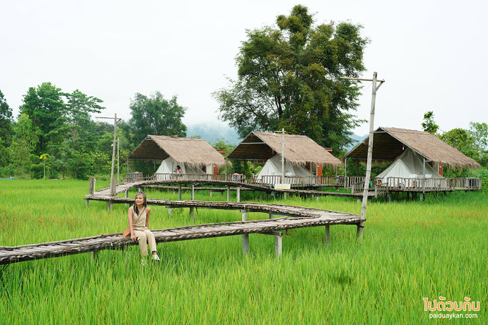

ภูผาม่าน โฮมสเตย์ ขอนแก่น
อยากพักผ่อนยังที่พักวิวกลางทุ่งนา มีฉากหลังเป็นภูเขาหินปูนที่สวยงาม ไม่ต้องไปถึงภาคเหนือ เพราะขอนแก่นเมืองอีสานบ้านเรามีที่พักสุดฟิน “ภูผาม่าน โฮมสเตย์” ที่พักบรรยากาศดีที่ซุกซ่อนตัวอยู่ในอำเภอภูผาม่าน อำเภอที่ยังคงมีความบริสุทธิ์ของธรรมชาติ รายล้อมด้วยเทือกเขาหินปูนที่สวยงาม พื้นที่ภายในที่พักยังมีคาเฟ่ตกแต่งแบบโมเดิร์นมองเห็นวิวภูเขา กระท่อมกลางนาสำหรับนั่งทานอาหาร และสะพานไม้ไผ่กลางทุ่งให้เดินเล่นถ่ายภาพ ยามเช้ายังได้ชมสายหมอกบางที่ลอยคลอเคลียตามหุบเขา ครบ จบ ฟินขนาดนี้ ไม่มาคงไม่ได้แล้ว

ภูผาม่าน โฮมสเตย์ตั้งอยู่ในอำเภอภูผาม่าน จังหวัดขอนแก่น ห่างจากตัวเมืองขอนแก่นใช้เวลาเดินทางประมาณ 2 ชั่วโมง หากเดินทางมาจากกรุงเทพใช้เวลาเกือบ 7 ชั่วโมง ระยะเวลาในการเดินทางถือว่าใช้เวลาไม่น้อยเลยทีเดียวค่ะ แต่เชื่อเถอะมาถึงแล้วหายเหนื่อยกับภาพที่ได้เห็นตรงหน้า ที่พักที่ตั้งอยู่กลางทุ่งนา วิวข้างหลังคือภูเขาหินปูนของภูผาม่าน พร้อมด้วยสะพานไม้ไผ่ที่ทอดยาว ในยามเช้าช่วงที่ฝนตกใหม่ๆ เราจะได้เห็นภาพสายหมอกบางลอยผ่านภูเขาแบบนี้ อากาศสดชื่นเย็นสบาย
ส่วนใครที่ไม่ได้พัก สามารถแวะมาเที่ยวจิบเครื่องดื่ม ทานอาหาร ชมวิวถ่ายภาพรูปได้ มีคาเฟ่และร้านขายส้มตำเล็กๆตั้งอยู่ด้านหน้า คาเฟ่ตกแต่งในโทนสีดำแบบโมเดิร์น์นิดๆ บรรยากาศดีอยู่ริมทุ่งนา คาเฟ่มีสองชั้น ชั้นล่างเป็นแบบห้องแอร์ มีที่นั่งเอาท์ดอร์รับลมด้านนอก ส่วนชั้นสองเป็นที่นั่งริมระเบียงที่สามารถมองเห็นวิวของเทือกเขาหินปูนและที่พักได้แบบชัดเจน คาเฟ่เน้นให้บริการเครื่องดื่มและของหวานเป็นหลัก
ภูผาม่าน โฮมสเตย์ อีกหนึ่งที่พักขอนแก่นที่มาแรงในขณะนี้ แวะมาที่นี่จะได้พบกับบรรยากาศที่คล้ายคลึงกับภาคเหนือ เหมือนที่พักแบบตูบในเมืองน่าน แถมยังสภาพแวดล้อมยังมีความบริสุทธิ์มาก อำเภอภูผาม่านยังมีที่เที่ยวและคาเฟ่สวยหลายแห่งให้แวะ สำหรับใครที่ต้องการติดต่อจองที่พัก สามารถเข้าไปจองได้ที่เพจของที่พัก ภูผาม่าน โฮมสเตย์ หรือ โทร 084 798 6009